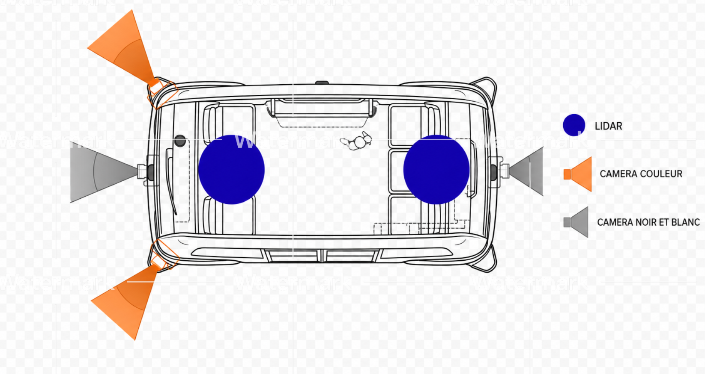
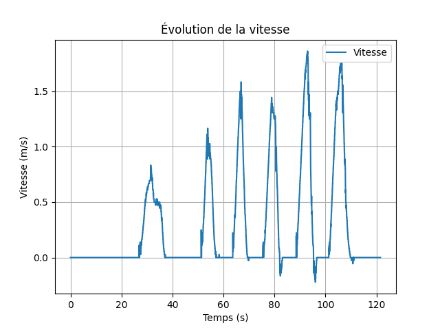
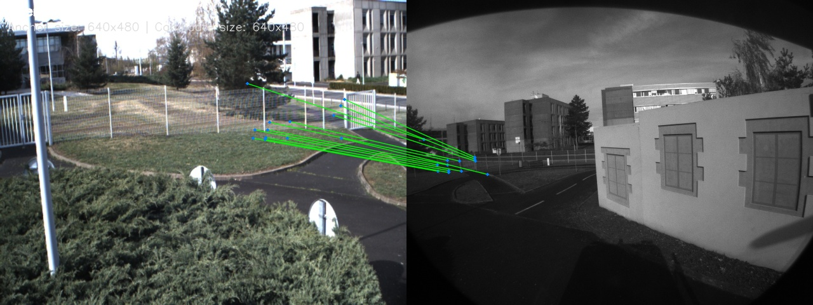
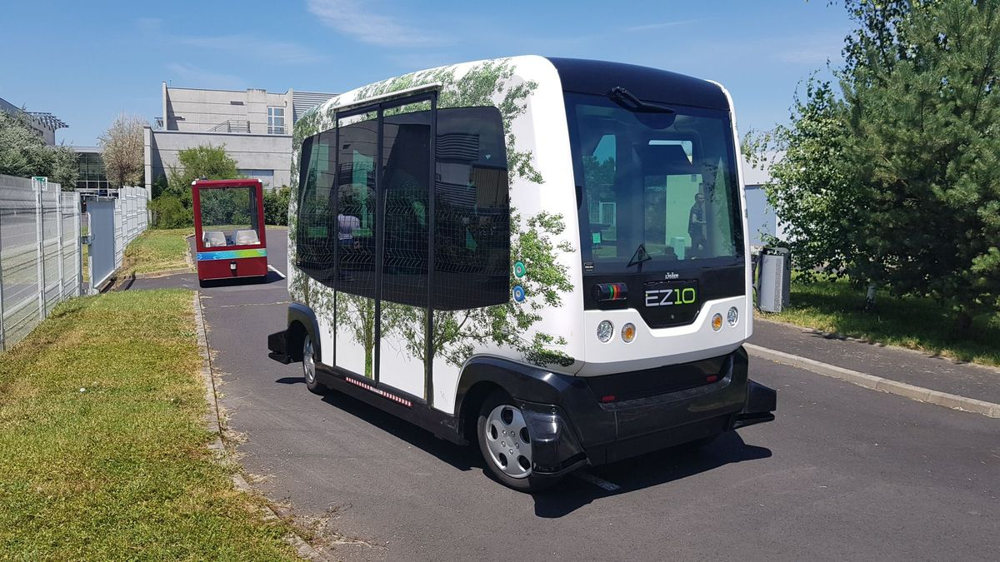
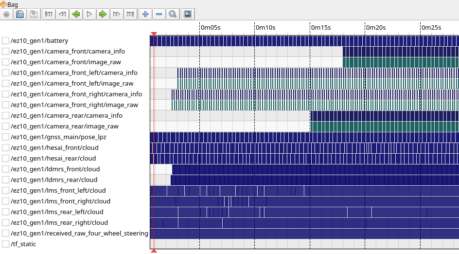
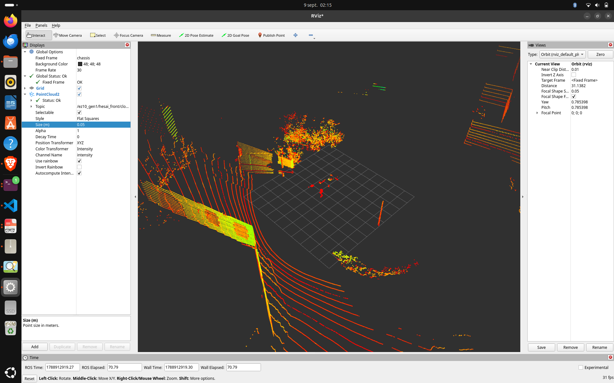
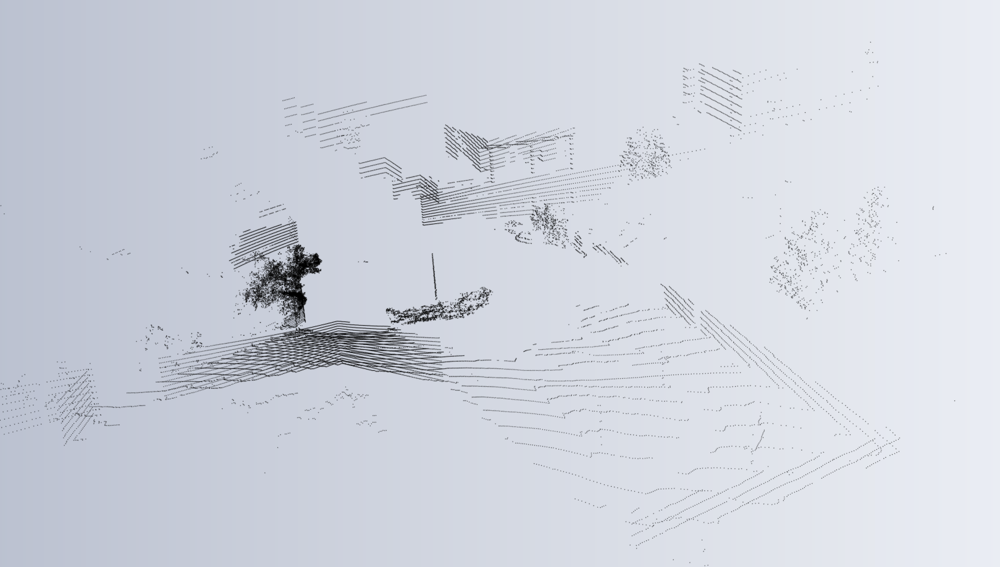
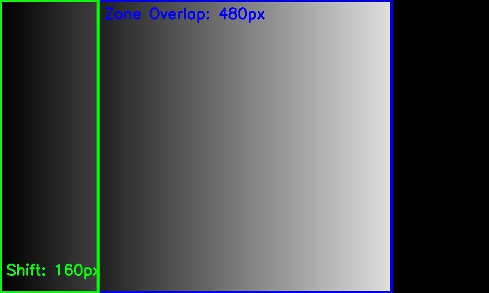
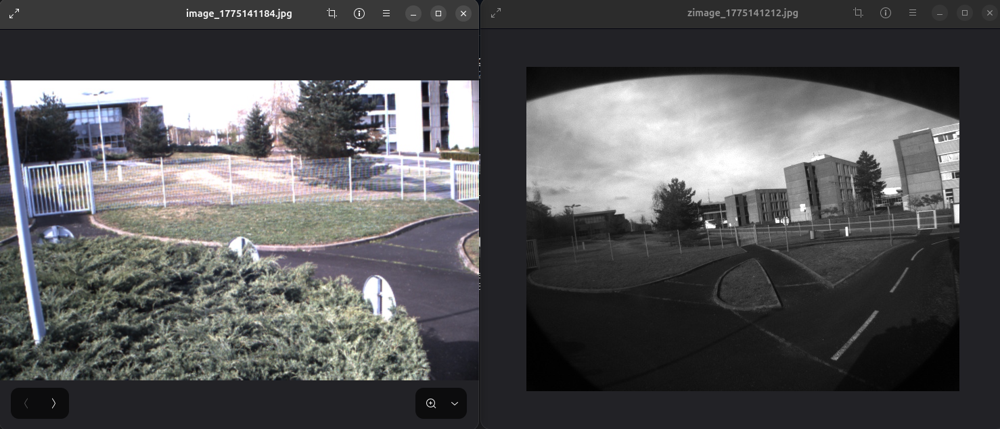
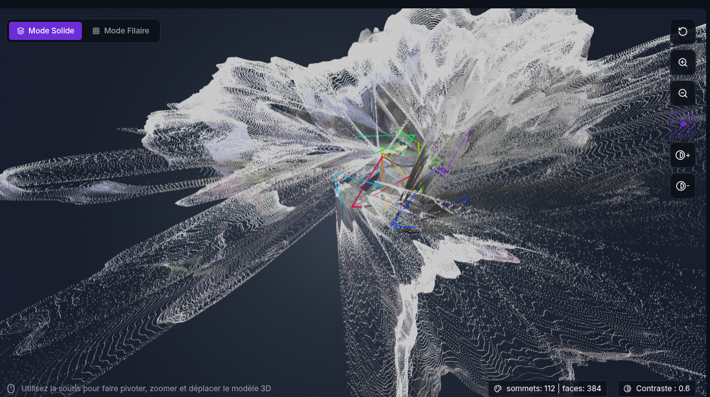

Stage Master 1 Automatique & Robotique — Institut Pascal (UMR 6602 CNRS / UCA) & Plateforme PAVIN
Contexte
Dans le cadre de mon Master 1 en Automatique et Robotique à l'Institut Pascal (UMR 6602 CNRS / Université Clermont Auvergne), au sein de l'axe ISPR (Image, Systèmes de Perception, Robotique) et de l'équipe de recherche ComSee, j'ai réalisé une étude approfondie sur les défis de la perception multi-capteurs appliquée aux véhicules autonomes.
Les expérimentations ont été menées sur la plateforme d'essais PAVIN (Plateforme d'Auvergne pour Véhicules Intelligents), en utilisant une navette autonome EasyMile EZ10. Ce véhicule est équipé d'une architecture multi-capteurs complexe :
- 4 caméras périphériques : une caméra avant et une arrière monochromes, couplées à deux caméras couleur latérales (orientées à droite et à gauche). Contrainte majeure de l'étude : les caméras ne partagent aucune zone de recouvrement visuel direct.
- 2 LiDARs 3D à 360° : Hesai Pandar XT32 (32 faisceaux lasers) positionnés sur le toit (avant et arrière) pour capturer la géométrie métrique de l'environnement tridimensionnel.
- Capteurs proprioceptifs & géospatiaux : odométrie cinématique du châssis à 4 roues directrices (4WS) et récepteur GNSS (GPS).
L'enjeu central : Évaluer la faisabilité et la robustesse de l'auto-calibration extrinsèque du système de vision sans mire géométrique dédiée, en exploitant le modèle d'apprentissage profond de pointe VGGT (Visual Geometry Grounded Transformer).
Problématique & Verrous Scientifiques
Les données brutes enregistrées sous forme de fichiers .rosbag (ROS 2) présentaient plusieurs obstacles majeurs empêchant l'alimentation directe du réseau de neurones :
- Contrainte mémoire et passage à l'échelle de VGGT : Le modèle repose sur un mécanisme d'attention alternée (Frame-wise et Global Attention) appliqué à des tokens visuels. La complexité mémoire en VRAM GPU croît de façon critique avec le nombre de trames, limitant l'échantillonnage de traitement à un bloc strict de 20 images maximum par inférence.
- Redondance massive et données stationnaires : En circulation réelle, la navette traverse des phases d'arrêt prolongées (intersections, feux, cédez-le-passage). L'injection d'images quasi-identiques sans mouvement de translation gaspille les ressources GPU et induit le modèle en erreur en créant des dégénérescences géométriques.
- Altérations optiques et photométriques : Les objectifs grand-angle souffrent d'une importante distorsion géométrique (effet fisheye). De plus, les variations d'ensoleillement génèrent des trames surexposées/saturées (perte d'information dans les hautes lumières) ou du flou cinétique en phase de virage.
- Hétérogénéité des modalités (2D visuel vs 3D métrique) : VGGT opère exclusivement sur des flux d'images 2D, tandis que les LiDARs fournissent une géométrie métrique 3D absolue. L'absence de passerelle logicielle empêchait la création d'une vérité terrain indépendante pour valider les poses estimées.

Architecture Fonctionnelle du Pipeline
Face à ces contraintes, j'ai conçu et développé un pipeline modulaire et intelligent de pré-traitement en Python et ROS 2, articulé en 6 briques algorithmiques complémentaires :
1. Synchronisation temporelle stricte et gestion des flux
Développement d'un algorithme d'appariement à fenêtre temporelle glissante (< 1 ms de tolérance). Une politique rigoureuse de rejet a été mise en place : si l'une des quatre caméras subit une perte de trame (frame drop), le quadruplet complet est immédiatement rejeté pour garantir l'intégrité géométrique spatio-temporelle de l'échantillon.
2. Filtrage cinématique et tri odométrique (Arrêt du véhicule)
Analyse conjointe des vecteurs de vitesse odométrique ($v_x, v_y, \omega_z$). Détection automatique des phases d'immobilité stricte via un seuillage adaptatif $\varepsilon \approx 0$. Ce tri a permis d'isoler des lots de repos (notamment des phases d'arrêt de 15 secondes planifiées sur PAVIN), éliminant tout flou de bougé et isolant la géométrie statique.

3. Correction géométrique et conditionnement photométrique (OpenCV)
- Dédistorsion selon le modèle unifié de Mei : Inversion mathématique de la distorsion grand-angle fisheye par projection sur la sphère unitaire ($\xi$), reprojection avec la matrice intrinsèque $K$ extraite des métadonnées
camera_infoet rééchantillonnage bilinéaire viacv2.remap. - Filtrage de saturation : Détection de la surface brûlée par masque booléen sur le niveau 255. Rejet automatique des trames dépassant un seuil critique de 15% de pixels saturés.
- Analyse du contraste et netteté Laplacienne : Calcul de la variance du Laplacien ($\Delta I = \frac{\partial^2 I}{\partial x^2} + \frac{\partial^2 I}{\partial y^2}$) afin d'éliminer les images dégradées ne présentant pas de gradients d'intensité suffisants.
4. Filtrage visuel intelligent par Transformer (LoFTR) & Contrôle du recouvrement
Le point de bascule méthodologique du projet : Le modèle VGGT ne traite pas des images isolées, mais repose sur l'attention globale entre vues. Un recouvrement trop élevé (>80%) crée une redondance stérile, tandis qu'un recouvrement insuffisant (<30%) rend l'appariement géométrique instable.
Pour quantifier et réguler ce recouvrement sans dépendre de détecteurs de coins classiques (SIFT/ORB) sensibles aux faibles textures, j'ai intégré le réseau LoFTR (Local Feature Transformer). Grâce à ses mécanismes de self et cross-attention denses, LoFTR évalue avec précision le pourcentage de chevauchement géométrique réel entre deux vues. Deux algorithmes de sélection ont été développés :
- Sélection panoramique séquentielle : Parcours chronologique avec rétention sous une consigne cible de recouvrement optimal (ex: 60%), garantissant une parallaxe idéale tout en respectant la limite des 20 trames.
- Recherche itérative par consigne cible : Exploration globale sur le jeu de données pour extraire la paire d'images candidate la plus proche du taux de recouvrement visé.

5. Référence tridimensionnelle LiDAR & Benchmark SLAM
Afin de disposer d'une référence géométrique indépendante (Ground Truth) pour évaluer les prédictions d'auto-calibration de VGGT, les scans du LiDAR 3D Hesai Pandar XT32 ont été exploités :
- Conditionnement spatial du nuage de points : filtrage des auto-occlusions du véhicule (< 2 m) et limitation de la portée utile à 20 m.
- Déploiement d'une architecture de comparaison basée sur Kitware LiDAR SLAM (recalage géométrique Scan-to-Map) sous ROS 2, fournissant une trajectoire 3D continue indépendante de la vision pure.
6. Traitement dynamique par Chunks & Concaténation de Trajectoire
Partitionnement automatique des flux sélectionnés en blocs discrets de 20 images enregistrés sous format compressé .npy (predictions_chunk_XXXX.npy). Réassemblage de la trajectoire globale via un algorithme de concaténation à fenêtre de recouvrement inter-blocs ($n_{\text{overlap}} = 3$) et recalage hiérarchique par morceaux (piecewise) face à la vérité terrain GPS.
Résultats & Bilan Scientifique
L'évaluation du pipeline complet a démontré des gains majeurs, confirmant que le conditionnement en amont est déterminant pour l'efficacité des modèles d'IA géométriques :
- Élimination de plus de 80% des données redondantes sans aucune altération de l'information géométrique utile.
- Suppression des saturations mémoire GPU : exécution fluide des inférences VGGT dans la limite des 20 trames par bloc.
- Convergence et stabilité accrues : La régulation du taux de recouvrement visuel par LoFTR à une valeur cible (~60%) a permis d'optimiser l'attention globale du modèle, stabilisant les prédictions des poses extrinsèques de caméras et la densité des cartes de profondeur.
- Validation de la trajectoire : Confrontation cohérente de la structure globale reconstruite avec la vérité terrain GNSS/LiDAR, tout en caractérisant la dérive monoculaire résiduelle (qui ouvre la voie à un ajustement de faisceaux global / bundle adjustment).
- Rigueur méthodologique et travail d'équipe : Collaboration étroite avec les doctorants de l'Institut Pascal et partage régulier des avancées, consolidant mon expertise en ROS 2, vision par ordinateur, algorithmes d'apprentissage profond et robotique autonome.
Galerie du Projet


Navette EasyMile EZ10
Plateforme mobile expérimentale sur le circuit d'essais PAVIN.



Flux ROS 2 & Synchronisation
Visualisation sous RQT-graph des nœuds et des topics capteurs synchronisés.



Nuage de Points LiDAR 3D sous RViz2
Acquisition des 32 faisceaux lasers du LiDAR Hesai Pandar XT32.


Reconstruction Spatiale LiDAR
Conditionnement spatial et filtrage des nuages de points de 2 à 20 mètres.



Diagnostic de Recouvrement
Contrôle de la consigne cible (60%) pour garantir la parallaxe optimale pour VGGT.


Images Sources Multi-Caméras
Échantillons des flux avant, arrière et latéraux avant traitement et dédistortion.


Sortie VGGT & Localisation 3D
Reconstruction et estimation des poses extrinsèques de caméras produites par le modèle.